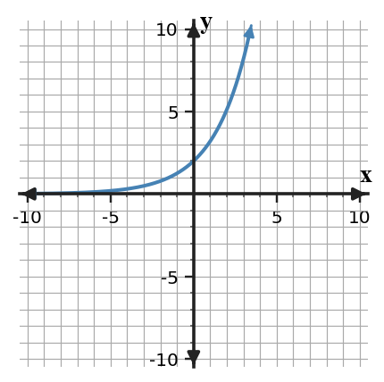
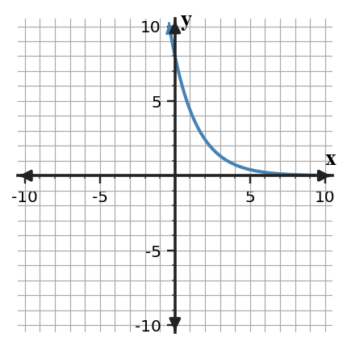

Unit 7 DOK 1.3 Graph Feature Reading Task V1
Name:
Show work and mark answers clearly.
1.
Use the blank coordinate plane to plot key points for $y=2^x$ at $x=-2,-1,0,1,2$.

Make a small table first, then plot the points.
Use the blank coordinate plane to plot key points for $y=2^x$ at $x=-2,-1,0,1,2$.
Make a small table first, then plot the points.
Use the blank coordinate plane to plot key points for $y=3(2)^x$ at $x=-2,-1,0,1,2$.
Make a small table first, then plot the points.
Use the blank coordinate plane to plot key points for $y=8(0.5)^x$ at $x=-2,-1,0,1,2$.
Make a small table first, then plot the points.
Use the blank coordinate plane to plot key points for $y=4(1.5)^x$ at $x=-2,-1,0,1,2$.
Make a small table first, then plot the points.
Read the graph. Estimate the $y$-intercept, then decide whether the multiplier is greater than $1$ or between $0$ and $1$.

Read the graph. Estimate the horizontal asymptote, then decide whether the multiplier is greater than $1$ or between $0$ and $1$.

State the horizontal asymptote for each function.
State the horizontal asymptote for each function.